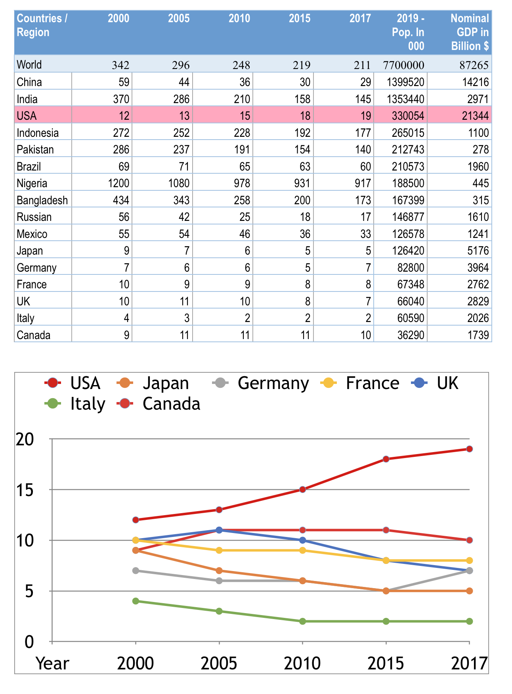

High Maternal Mortality Rate
Global Mortality Rates can be found here. The site provides many ways to look at the data.
I downloaded the data and focused on the top 10 most populous and ten wealthiest countries. With the overlap of the USA and China in both lists, we have 18 countries on the list. At the top is the world average. Most striking is increasing in maternal mortality ratio for the USA. The ratio is the number of mothers who die per 100,000 live births. When you compare data of G7 countries, the wealthiest western-style democratic countries, one can understand how outliner USA is. First, the maternal mortality ratio is highest for the USA to start with, and secondly it is increasing! That is the crisis of maternal health in our country. Amnesty Internal has a report specifically dedicated to America's maternal health care crisis, and highlights of the report are eye-opener.
Women Dying in Childbirth
World health organization reports that globally maternal deaths are declining. However, when one reads details of the report, one realizes two things: 1) decline is not fast enough, and 2) it is unevenly distributed. WHO report sets the context for our global challenges to improve maternal health. It should help policymakers and doctors world-wide to respond appropriately.